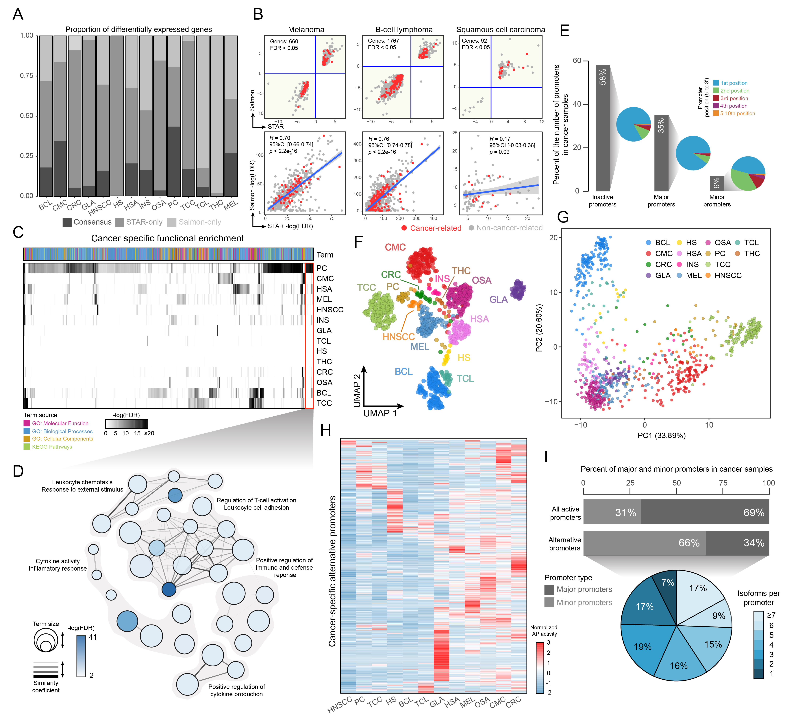

Analysis of the transcriptional phenotypes across multiple cancer types, known as pan-cancer transcriptomic analysis, identifies commonalities and differences in key gene expression signals dysregulated in cancer cells from diverse lineages [1] Given the genetic and physiological similarities between humans and dogs, as well as the prevalence of naturally occurring cancers in canine populations, there is significant potential for the application of pan-cancer transcriptomic analysis in veterinary oncology [2]. Such studies could not only enhance our understanding of canine cancers but also provide valuable comparative insights into human oncology, potentially revealing novel therapeutic targets and improving the welfare of both humans and their companion animals [3].
Here I present an unfinished work evaluating expression signatures at the gene, promoter and mutational levels across 14 different cancer-types in the dog. Using a systematic approach to search through NGS associated databases (SRA, DDBJ, ENA, and CNCB-NGDC), I looked up more than 3,000 papers/projects with canine gene expression-associated data to end up downloading 1,452 whole transcriptomes produced by paired-end RNA-seq data, including cancer and control samples for each one of the tissues.
In short, FASTQ files were trimmed with Trimmomatic (v.0.38) [4], aligned with STAR (2-pass) (v.2.7.8a) [5] to the dog reference genome (ROS_Cfam_1.0, Ensembl 108) and quantified with STAR and Salmon [6], separately. Potential batch-effects were corrected using ComBat-Seq (sva v.3.36) [7] and subjected to DESeq2 (v.1.34) [8] for the differential expression analysis. Gene set enrichment analysis was performed with gProfiler [9]. On the other hand, I used a modified version of proActiv (v.1.1.18) [10] to estimate promoter activity in each cancer-type. To call variants, each BAM file was pre-process with Opossum (v.0.2) [11] and evaluated with Platypus (v.0.1.5) [12] to detect specific single nucleotide polymorphisms (SNPs). Control runs served to annotate new variants, generate a new Panel Of Normals (PON) and filter those present in cancer calls. To improve the sensitivity on calling true variants, I included three external PONs: 1) Ensembl dbSNP; 2) Plassais et al., (2016); 3) Gou et al., (2019). It is of importance to note that variants from the last two sources were called with CanFam3.1 as reference. To overcome this, I lifted over all chromosome-placed variants from that assembly to our reference ROS_Cfam_1.0, to end up with a PON of ~150 million variants. To map any resultant gene from the analyses performed in this study to a potential cancer-related function, I cross-matched oncogenes, tumor suppressor genes, and cancer-related curated annotations from 4 databases: COSMIC [13], ONGene [14], TSGene [15], and CANCROX [16].

After conducting a quality control process that removed low-coverage and duplicate samples, I narrowed down our dataset to 1,395 transcriptomes (Fig. 1A). I found some interesting distributions regarding age, sex, reproductive status and breed (Fig. 1B), which directly corresponds with the nature of specific cancer-types. For example, the notorious difference between the mean age of Head and Neck Squamous Cell Carcinomas (HNSCC) samples and other types such as B-cell Lymphomas (BCL), or the sex proportions in Transitional Cell Carcinomas (TCC). Another round of filtering to retain only samples with a minimum of 50% of reads mapped to the canine genome led me to further reduce the number to 1,233 transcriptomes (Fig. 1C). Dimensional reduction techniques showed a clear positive correlation between spatial context and cancer-types. Both, linear and non-linear approaches, succeed in clustering similar types of malignancies: lymphoid-like (BCL, TCL, HS), epithelial-like (TCC, CRC, PC, HNSCC, CMC, THC, INS), mesenchymal-like (MEL, HSA, OSA) and CNS (GLA) (Fig. 1D, 1E). This confirms a specific pan-type signature across neoplasms with marked expression signals that are even able to differentiate specific types. The same conclusions could be achieved using other methods, such as hierarchical clustering, where I could see how genes behave across all types (Fig. 1F).

Since intra-project biases are intrinsically present when integrating different studies, I decided to assume that the intersection between differentially expressed genes (vs. their healthy counterpart) coming from two different quantification approaches (STAR and Salmon) would be the only source of change for each cancer-type. I found that both methods could achieve decent correlations in some cancers (MEL, BCL) but completely fail in others whether not having any type of intersection (HS, THC) or very poor correlations (HNSCC) (Fig. 2A, 2B). With this set of DE genes, I performed a pan-cancer Pathway Enrichment Analysis (PEA), showing that some cancers enrich specific functions (Fig. 2C). In this regard, I found that Prostate Cancer (PC) DE genes seem to be specific to T-reg activation and inflammatory responses, something that has been described elsewhere [14] (Fig. 2D). On the other hand, I found that in terms of promoter activity, cancer cells show a specific distribution, with most of their gene promoters in an inactive state (Fig. 2E). Reducing pan-cancer promoter activity estimates to two dimensions show the same spatial context seen with gene-level estimates (Fig. 1D-E, Fig. 2F-G). This makes sense, since the expression of a gene is bound to its promoter activation. Additionally, I traced alternative promoters to the same deregulated DE genes in each cancer-type and found a specific activation signature that could differentiate each malignancy (Fig. 2H-I).

To go one step further, I quantified the pan-cancer mutational burden of each type. I discovered that some cancer-types have a significantly higher mutational rate, such as gliomas (GLA), than others, like insulinomas (INS), in the dog. The distribution of the variant classes (e.g. INDELs, SNVs) and types (e.g. coding, non-coding, splicing, 3’-5’ UTR) seems to not change dramatically across cancers but appears to identify the expected heterogeneity across samples within each type (Fig. 1A). Using the resultant variants, I estimated which genes could be clearly classified as pan-cancer drivers. Considering the frequency of variants in a gene as well as the deleterious effect of that variant on the translation process (e.g. protein disruption), I would subset the most important genes across all types. Most of these pan-cancer drivers I found were actually known cancer-related genes, whether oncogenes or tumor suppressor genes (TSGs), like TP53, BRAF, or PIK3CA. Furthermore, this analysis allowed me to discover cancer-specific mutational signatures by associating specific oncogenes/TSGs to a particular malignancy (e.g. PIK3CA -> CMC, GLA). The interactome among these pan-cancer driver genes revealed a compact network of 11 genes, consisting of 8 known oncogenes and 3 genes not previously linked to cancer that could serve as promising targets for future research and therapeutic development.
Considering this work is not finished yet, some discoveries have been extremely interesting to study. Looking at the expression signals, mutational burdens and driver genes has not only corroborated known cancer biology but has also unveiled novel genes linked to cancer pathogenesis in the dog. I truly believe that some of these findings have the potential to be extrapolated to human oncology and help us to understand more about this complex disease.
If you are here, thanks for reading the whole text! Let me know your comments through an email!